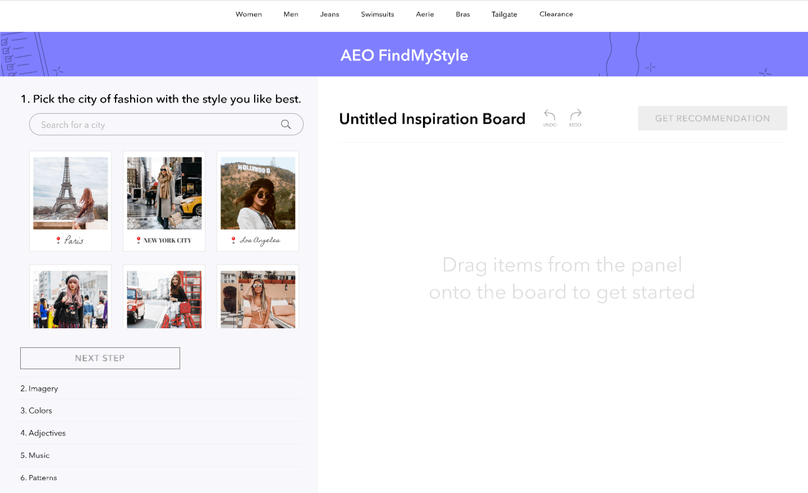
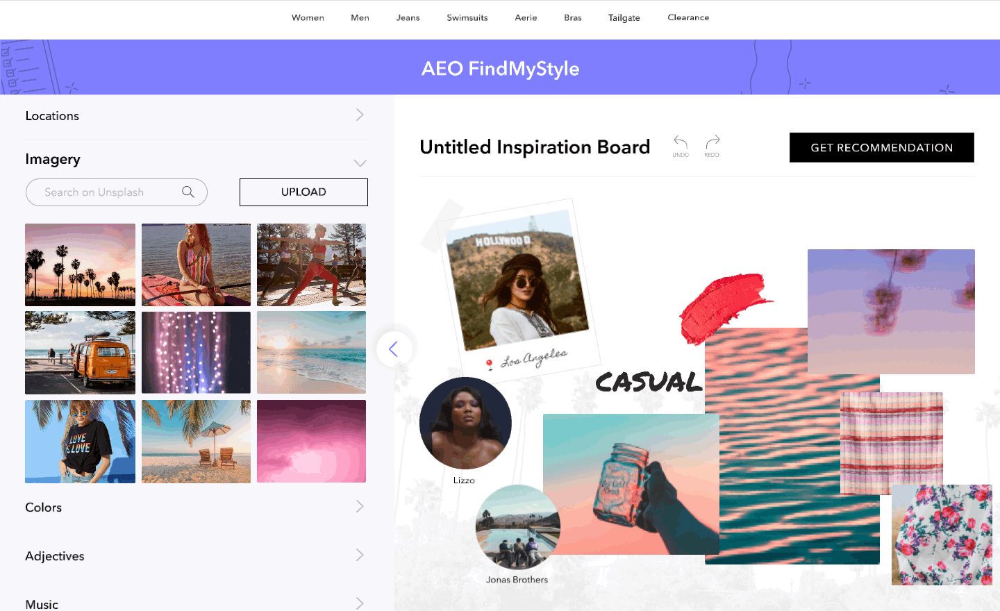

ONLINE
Guided inspiration board
The FindMyStyle experience begins online, when users create an inspiration board of images, music, adjectives, and colors related to their personality and style. The inspiration board is meant to capture users’ passive shopping preferences in a unique and creative way.


ONLINE
AI-generated recommendations
After completing their inspiration board, users receive a personalized, AI-generated list of recommended items. These are viewable in outfit or individual view to help users envision how they might look with items they already own.
IN-STORE
Navigation to recommended items
If users choose to go to American Eagle or Aerie’s brick-and-mortar store, they can access their recommended items online. An augmented reality or floor-plan view helps users navigate to these items in the store, expediting the in-store shopping process.
Accessible reviews
Shoppers may also choose to scan item tags in-store to access reviews, possible outfits, and more via American Eagle’s website.